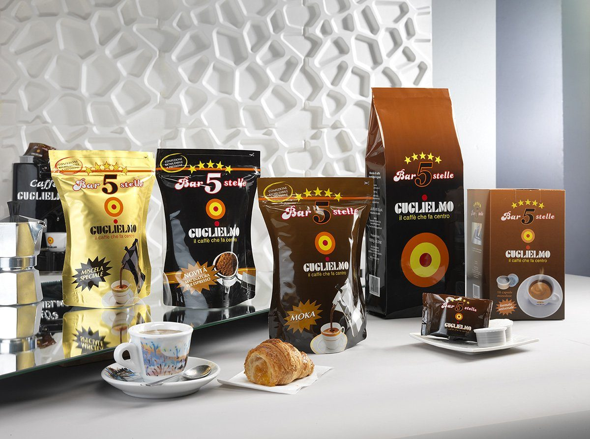

Five stars, one cup
Bar 5 Stelle
Central American and Brazilian Arabica with other select origins, roasted slowly for a full, rounded body and a ribbon of sweetness. Delicate yet intense, it comes as beans, ground for the moka pot or finer for the espresso machine, and in 36 mm capsules.